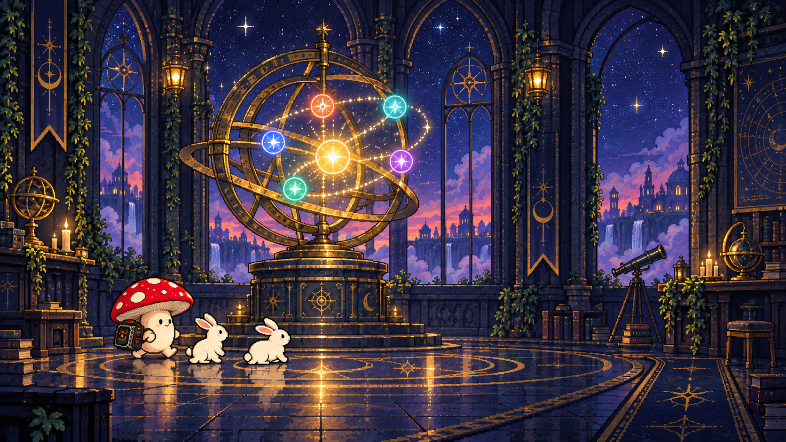

LOGIC CODE
音樂密室逃脫・第二篇章
CHAPTERII
FUGATA〈賦〉
讓失落的樂句，再次完整發聲
進入前提示
先聽一段，記住最初出現的樂句主題。
完整歌曲：載入中……
LOGIC CODE / FUGATA
第一室｜找到旋律的種子
樂句的主題
01 / 06
參考混音：尚未播放

LOGIC CODE
第二篇章
FUGATA
LOGIC CODE
重構紀錄／FUGATA〈賦〉
- 模組合成器
- Miss DJ Bear Beat
- 鼓組／節奏
- Leroy
一段從樂句主題出發，逐步展開為多聲部結構的模組合成與鼓樂作品。
LOGIC CODE
CHAPTER IIFUGATA〈賦〉
帶著一切回到起點
完美重建！
樂句主題、主題答句、聲部、合成器接線與節奏，
都帶著一路累積的變化回到了起點。
《Fugata》重構完成。
Leroy我原本以為回到開頭，
就代表一切重來。
Miss DJ Bear Beat音樂不是回到原點。
它只是讓你再次聽見
同一個地方有多不一樣。
Leroy樂句主題繞了一大圈，
把我們一路聽過的東西
全都帶了回來。
Miss DJ Bear Beat這一章完成了。
但脈衝還在前進。
FUGATA — 完整歌曲
已暫停
0:00
0:00
LOGIC CODE
第三篇章 — BREAK OF DAWN
敬請期待